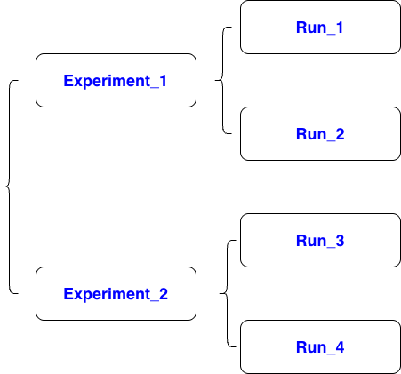

# load dat
import pandas as pd
data = pd.read_csv("/home/housing.csv") # Pandas DataFrame
# preparing training set and test set
from sklearn.model_selection import train_test_split
import numpy as np
data_X = data.drop(['median_house_value'], axis = 1) # DataFrame
data_Y = data['median_house_value'] # Series
# split the dataset by categories of median income for stratify split
data['income_cat'] = np.ceil(data['median_income']/1.5)
data['income_cat'].where(data['income_cat'] < 5, 5, inplace=True)
train_X, test_X, train_Y, test_Y = train_test_split(data_X, data_Y, test_size=0.2, random_state=42, stratify = data['income_cat'])
# preprocessing pipeline
from sklearn.base import BaseEstimator, TransformerMixin
class AddAttributes(BaseEstimator, TransformerMixin):
def __init__(self): # no *args or **kargs
pass
def fit(self, X, y=None):
return self # nothing else to do
def transform(self, X):
temp = X.copy()
temp["rooms_per_household"] = temp["total_rooms"]/temp["households"]
temp["bedrooms_per_room"] = temp["total_bedrooms"]/temp["total_rooms"]
temp["population_per_household"]=temp["population"]/temp["households"]
return temp
from sklearn.pipeline import Pipeline
from sklearn.impute import SimpleImputer
from sklearn.preprocessing import StandardScaler
num_pipeline = Pipeline([
('attribs_adder', AddAttributes()),
('imputer', SimpleImputer(strategy="median")),
('std_scaler', StandardScaler()),
])
from sklearn.preprocessing import OneHotEncoder
cat_pipeline = Pipeline([
('cat', OneHotEncoder()),
])
from sklearn.compose import ColumnTransformer
preprocess_pipeline = ColumnTransformer([
("num_pipeline", num_pipeline, ['longitude','latitude','housing_median_age','total_rooms','total_bedrooms','population','households','median_income']),
("cat_pipeline", cat_pipeline, ['ocean_proximity']),
])
train_X = preprocess_pipeline.fit_transform(train_X)
# install package
! pip3 install --upgrade --quiet google-cloud-aiplatform
! gcloud config set project {PROJECT_ID}
# Only if your bucket doesn't already exist: Uncomment the following code to create your Cloud Storage bucket.
# ! gsutil mb -l {REGION} -p {PROJECT_ID} {BUCKET_URI}
def cross_validation(model, X, Y, k = 10):
scores = cross_val_score(model, X, Y, scoring='neg_mean_squared_error', cv = k);
return np.sqrt(-scores).mean(), np.sqrt(-scores).std() # represent perforance and precision respectively
import os
from google.cloud import aiplatform
from sklearn.ensemble import RandomForestRegressor # random forest model
PROJECT_ID = "storagedev-485602" # @param {type:"string"}
REGION = "us-central1" # @param {type: "string"}
BUCKET_URI = "gs://storagedev-485602-experiments-staging-bucket" # @param {type:"string"}
EXPERIMENT_NAME = "experiments-tutorial3" # @param {type:"string"}
aiplatform.init(
project=PROJECT_ID,
location=REGION,
experiment=EXPERIMENT_NAME,
staging_bucket = BUCKET_URI
)
run_name = "sklearn-run-4"
with aiplatform.start_run(run=run_name):
# hyperparameters
n_estimators=200
# train model
model = RandomForestRegressor(n_estimators=n_estimators)
model.fit(train_X, train_Y)
# evaluation model
test_X_temp = preprocess_pipeline.transform(test_X)
test_predict = model.predict(test_X_temp)
from sklearn.metrics import root_mean_squared_error
score = root_mean_squared_error(test_Y, test_predict)
# log parameters
aiplatform.log_params({
"n_estimators": n_estimators,
})
# log metrics
aiplatform.log_metrics({
"mean": mean,
'std': std
})
# build model pipeline
from sklearn.pipeline import make_pipeline
house_price_model = make_pipeline(preprocess_pipeline, model)
# log models
model_name = EXPERIMENT_NAME + '_' + run_name + '_model.pkl'
os.makedirs("model", exist_ok=True)
joblib.dump(house_price_model, "model/"+model_name)
import subprocess
subprocess.run([
"gsutil", "cp",
"model/"+model_name,
BUCKET_URI+"/"+model_name
])
from google.cloud import aiplatform
aiplatform.init(
project=PROJECT_ID,
location=REGION,
)
# list experiments
experiments = aiplatform.Experiment.list()
for exp in experiments:
print(exp.name)
# list runs in an experiment
runs = aiplatform.ExperimentRun.list(
experiment="experiments-tutorial3"
)
for run in runs:
print("Run:", run.name)
print("Params:", run.get_params())
print("Metrics:", run.get_metrics())
print("------")
# copy model to local
!gsutil cp gs://storagedev-485602-experiments-staging-bucket/experiments-tutorial3_sklearn-run-4_model.pkl .
import joblib
model = joblib.load("experiments-tutorial3_sklearn-run-4_model.pkl")
model.predict(test_X)